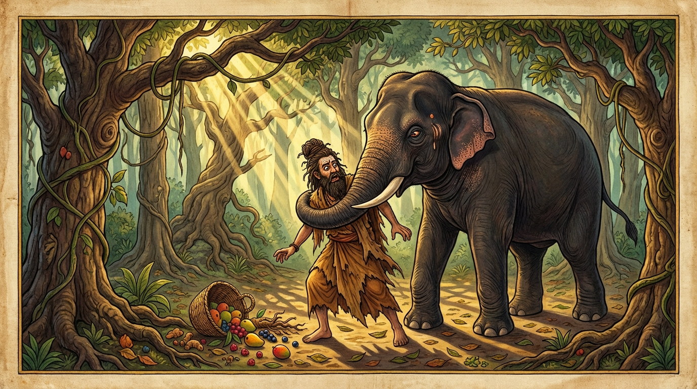

7. මිත්තාමිත්ත ජාතකය (197)
න නං උම්හයතෙ දිස්වා (ඔහු දැක සිනා නොසෙයි) යන මේ ධර්ම දේශනාව ශාස්තෲන් වහන්සේ ජේතවනාරාමයේ වැඩවාසය කරන සමයේ එක්තරා භික්ෂුවක් අරබයා වදාළ සේක. එක්තරා භික්ෂුවක් “මා විසින් මෙය ගත් කල්හි මාගේ උපාධ්යායන් වහන්සේ නොකිපෙන්නාහුය” යයි සිතා, උපාධ්යායන් වහන්සේ විසින් තබන ලද රෙදි කඩක් විශ්වාසය මත ගෙන, පාවහන් මල්ලක් මසා පසුව උපාධ්යායන් වහන්සේගෙන් (ඒ බව) විචාළේය. ඉක්බිති උපාධ්යායන් වහන්සේ “කුමක් හෙයින් නුඹ මාගේ රෙදි කඩ ගත්තෙහිදැයි” අසා, “මා විසින් ගත් කල්හි නොකිපෙන්නාහු යයි සිතා නුඹ වහන්සේ කෙරෙහි විශ්වාසයෙන් ගත්තෙමි” යයි කී කල්හි, “මාත් සමග නුඹට ඇත්තේ කිනම් විශ්වාසයක් දැයි” කියා කිපී, හුනස්නෙන් නැගිට පහර දුන්හ. භික්ෂුවගේ ඒ ක්රියාව භික්ෂූන් අතරෙහි ප්රකට විය. ඉක්බිති එක් දිනක් භික්ෂූන් වහන්සේලා දම්සභාවේදී “ඇවැත්නි! අසවල් ලාබාල භික්ෂුව උපාධ්යායන් වහන්සේ කෙරෙහි විශ්වාසයෙන් රෙදි කඩක් ගෙන පාවහන් මල්ලක් මැසුවේය. ඉක්බිති උපාධ්යායන් වහන්සේ ‘මා සමග නුඹට ඇත්තේ කිනම් විශ්වාසයක්දැයි’ කියා කිපී නැගිට පහර ගැසූහ” යනුවෙන් කථාවක් මතු කළාහුය. ශාස්තෲන් වහන්සේ එහි වැඩමවා “මහණෙනි, මා එන්නට පෙර කවර කථාවකින් යුක්තව සිටියාහුදැයි” විමසා, “මෙනම් කථාවකින් යයි” කී කල්හි, “මහණෙනි, මේ භික්ෂුව තමාගේ උපාධ්යායන් වහන්සේ සමඟ අවිශ්වාස කටයුතු වූයේ (විශ්වාසයක් නොමැති වූයේ) දැන් පමණක් නොවේ, පෙරත් අවිශ්වාසව සිටියේ යයි” වදාරා අතීත කථාව ගෙනහැර දැක්වූ සේක.
අතීතයේ බරණැස් නුවර බ්රහ්මදත්ත රජු රාජ්ය කරන සමයේ බෝධිසත්වයන් වහන්සේ කාසි රට බමුණු කුලයක ඉපිද, වැඩිවියට පැමිණ ඍෂි ප්රව්රජ්යාවෙන් පැවිදිව, අභිඥා හා සමාපත්ති උපදවාගෙන, පිරිසේ ආචාර්යවරයා වී හිමාල වනයෙහි වාසය කළහ. ඒ තාපස පිරිස අතර සිටි එක් තාපසයෙක් බෝධිසත්වයන්ගේ වචනය නොසලකා, මව මළ එක් ඇත් පැටවකු පෝෂණය කළේය. ඉක්බිති එම ඇත් පැටවා වැඩුණු පසු ඒ තාපසයා මරා වනයට පිවිසියේය. තාපස පිරිස ඒ තාපසයාගේ ශරීර කෘත්යය (අවමගුල් කටයුතු) කොට බෝධිසත්වයන් වහන්සේ පිරිවරාගෙන, “ස්වාමීනි, කිනම් කරුණකින් මිත්ර ස්වභාවය හෝ අමිත්ර (සතුරු) ස්වභාවය හෝ දැනගත හැකිදැයි” විචාළෝය. බෝධිසත්වයන් වහන්සේ “මේ මේ කරුණු වලින් යයි” පවසමින් මෙම ගාථාවන් වදාළ සේක:

“ඔහු දැක සිනා පහළ නොකරයි නම්, ඔහු හා (කථා බස් කොට) සතුටු නොවේ නම්, ඔහු දෙස ඇසින් ඇස ගැටී ඍජුව නොබලයි නම්, ඔහුට විරුද්ධවම පවතී නම්,”
“නුවණැති තැනැත්තා යම් ලක්ෂණ දැකීමෙන් හා ඇසීමෙන් ‘මොහු සතුරෙකි’ යි දැනගනී ද, මේ (ඉහත කී) කරුණු සතුරා කෙරෙහි පිහිටියේ වෙයි.”
එහි න නං උම්හයතෙ දිස්වා යනු, යමෙක් යමෙකුගේ අමිත්රයෙක් (සතුරෙක්) වේ ද, ඔහු ඒ පුද්ගලයා දැක සිනා නොවේ; සතුටු බවක් නොදක්වයි. න ච නං පටිනන්දති යනු, ඔහුගේ වචන ඇසුව ද ඔහු ඒ පුද්ගලයා හා සතුටු නොවෙයි; ‘හොඳයි, සුභාෂිතයක් (යහපත් දෙයක්) කියන ලද්දේය’ යි අනුමෝදන් නොවේ. චක්ඛූනි චස්ස න දදාති යනු, ඇසින් ඇස ගැටී ඉදිරියෙහි සිට නොබලයි; ඇස් වෙන අතකට හරවයි. පටිලොමඤ්ච වත්තති යනු, ඔහුගේ කාය කර්මයට ද වාග් කර්මයට ද කැමති නොවෙයි; විරුද්ධ පැත්තම ගනී. ආකාරා යනු කරුණු ය. යෙහි අමිත්තං යනු, යම් කරුණු මගින්, එනම් ඒ කරුණු දැක ද අසා ද නුවණැති පුද්ගලයා “මොහු මගේ සතුරෙකැයි” දැනගනී ද (ඒවා අමිත්ර ලක්ෂණ වේ). මීට විපරීත වූ (විරුද්ධ) ස්වභාවයෙන් මිත්රභාවය දත යුතුය.
මෙසේ බෝධිසත්වයන් වහන්සේ මිත්ර හා අමිත්ර භාවයට අදාළ කරුණු කියා දී, බ්රහ්ම විහරණ වඩා (මරණින් මතු) බ්රහ්ම ලොකයෙහි උපන්හ.
ශාස්තෲන් වහන්සේ මේ ධර්ම දේශනාව ගෙනහැර දක්වා ජාතක කථාව ගළපා වදාළ සේක. “එකල ඇත් පැටවා පෝෂණය කළ තාපසයා නම් (මේ) සද්ධිවිහාරික භික්ෂුවයි. ඇතා වූයේ උපාධ්යායන් වහන්සේය. තාපස සමූහයා වූයේ බුදු පිරිසයි. තාපස පිරිසේ නායකයා වූයේ මම ම වෙමි.”
මිත්තාමිත්ත ජාතක වර්ණනාව සත්වැනියි.